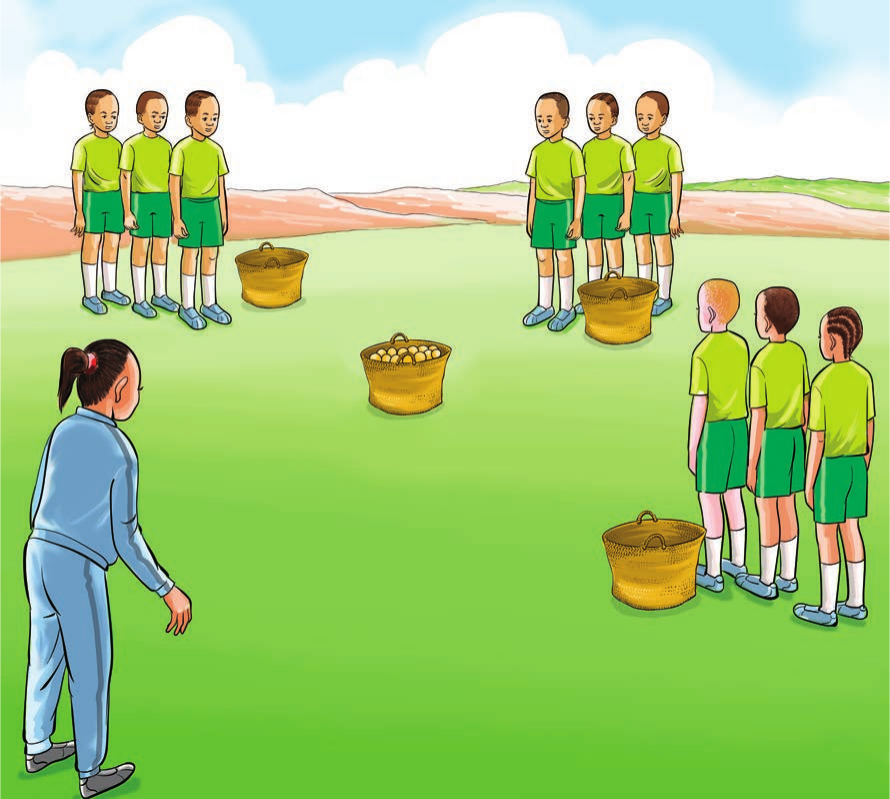

Tucheze mchezo
Kapu la matunda
Mchezo huu hauna idadi maalumu ya wachezaji. Wachezaji hugawanyika katika makundi matatu yenye idadi sawa.

Jinsi ya kucheza
- Weka kapu la matunda.
- Weka kapu tupu tatu kuzunguka kapu la matunda.
- Gawanyikeni katika timu zenye idadi sawa.
- Kila timu ikae nyuma ya kapu tupu na mbele ya kapu la matunda.
- Wachezaji wa kila timu wapewe namba 1–5.
- Mwamuzi ataita namba bila mpangilio.
- Namba yako ikitajwa kimbia kuchukua tunda kapuni.
- Rudi na kuweka tunda katika kapu la timu yako.
- Mwamuzi ataendelea hadi matunda yote yaishe.
- Timu itakayokusanya matunda mengi ndiyo washindi.